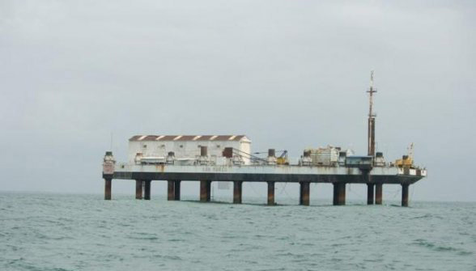
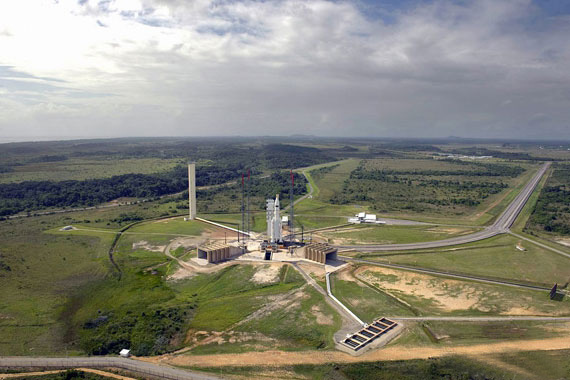
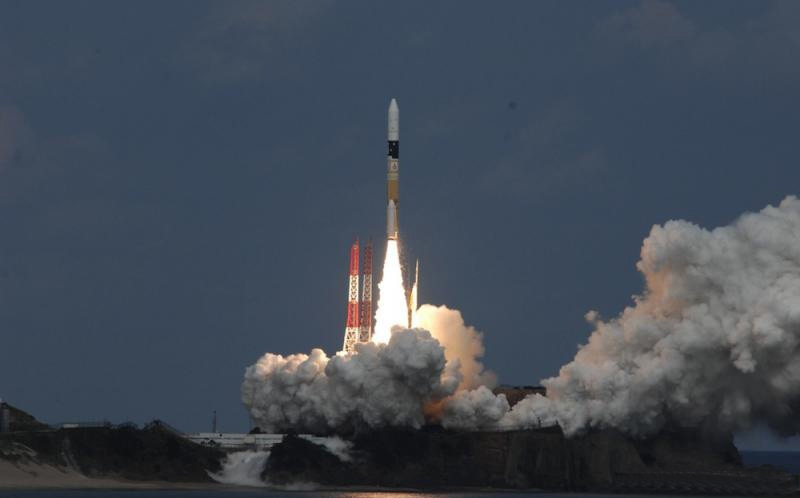
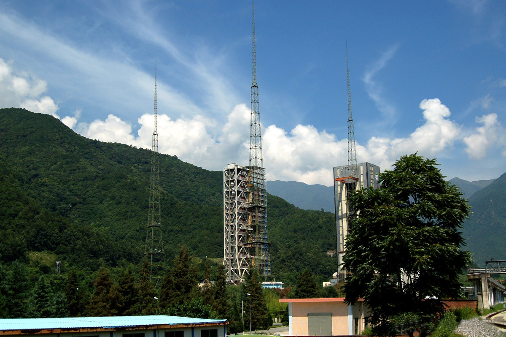
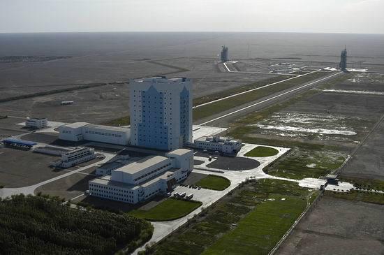
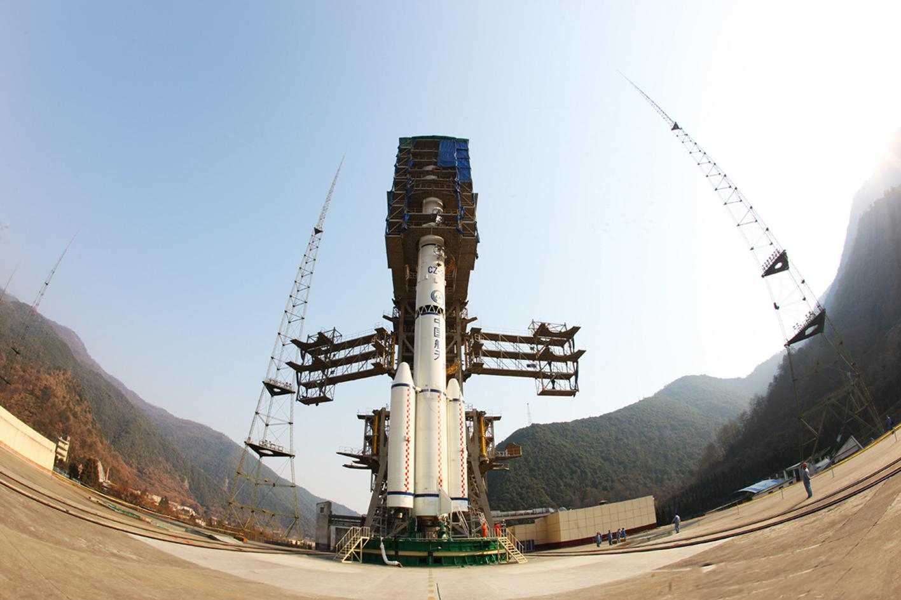
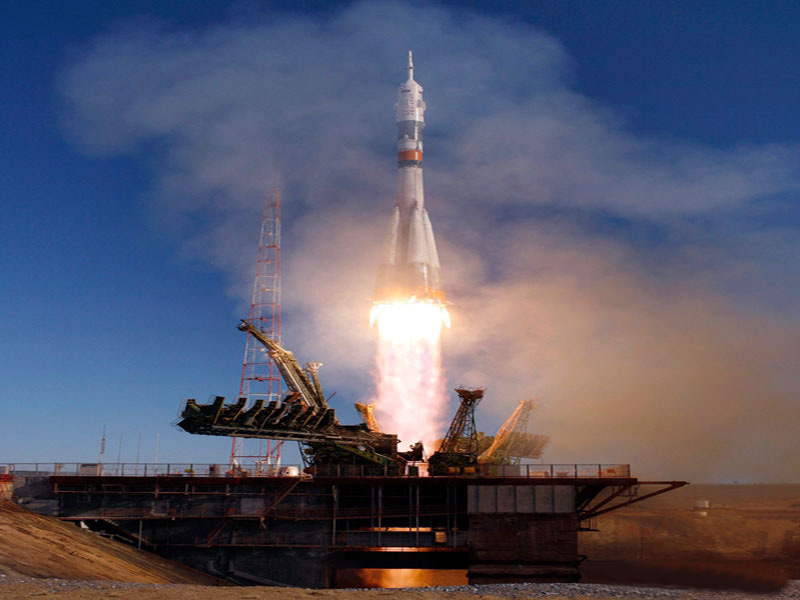
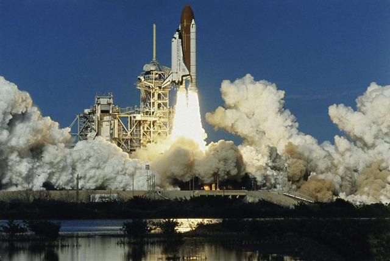
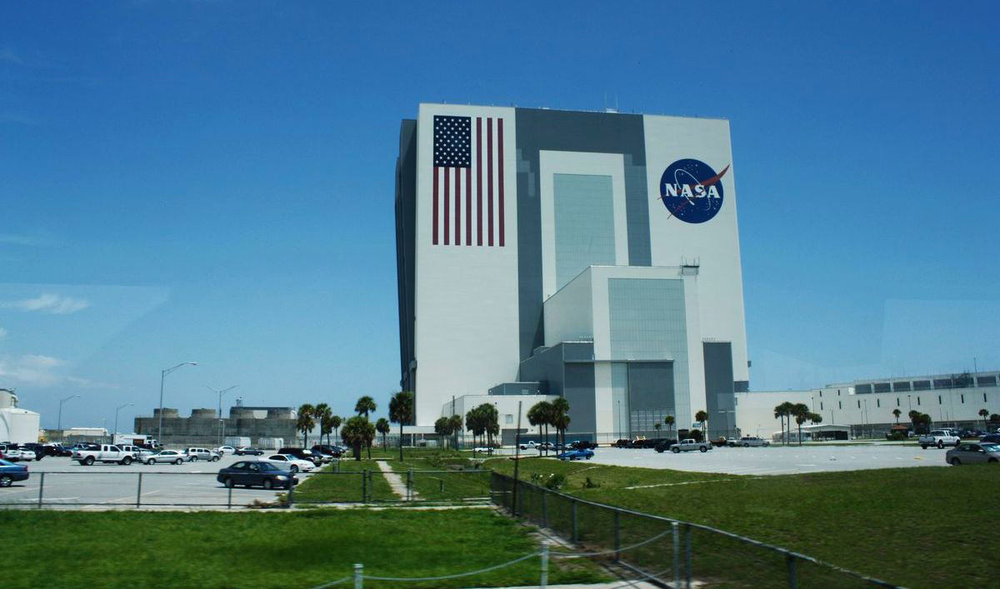

火箭是将航天器送入星际空间的工具，它们都是从发射场升空的。
第十名：圣马科发射场
有它独特的地理位置优势，但由于发射场只能实施小型航天器的发射，在赤道轨道以大型应用卫星为主的情况下，圣马科发射场施展才能的机会并不多。然而，由于是世界上迄今为止唯一一个可以使用的海上发射场，又曾经为美国发射过军用秘密卫星， 圣马科发射场也成为一些科幻小说家创作的素材。
第九名：欧洲航天发射中心
位于南美洲北部大西洋海岸的法属圭亚那，占地约90600平方公里，属法国国家空间研究中心领导，主要负责科学卫星、应用卫星和探空火箭的发射以及与此有关的一些运载火箭的试验和发射。
第八名：种子岛航天中心
包括两个大的发射场：吉信射场和大崎射场。吉信射场有两个发射台，一个为发射2吨以下的飞船，另外一个为发射大型的飞船。吉信射场也支持用来作H-IIA运载火箭的点火试验。其它设施包括卫星电波追踪站、雷达站、光学现到站等单位。制造火绳枪的地方。不过，对外国人来说，了解种子岛是因为这里有日本最大的航天设施种子岛宇宙中心。
第七名：西昌卫星发射中心
主要承担地球同步轨道卫星，通信、广播、气象卫星等试验发射和应用发射任务，是中国目前对外开放中规模最大、设备技术最先进、承揽卫星发射任务最多、具备发射多型号卫星能力的新型航天器发射场。
第六名：酒泉卫星发射中心
是中国最早建成的运载火箭发射试验基地，是测试及发射长征系列运载火箭、中低轨道的各种试验卫星、 应用卫星、载人飞船和火箭导弹的主要基地，基地并负有残骸回收、航天员应急救生等任务，截至2016年10月1日， 中国发射了约280颗人造卫星，其中82颗在酒泉发射。
第五名：文昌卫星发射中心
2009年9月开工建设，由测试发射、测量控制、通信、气象、技术勤务保障等五大系统组成， 主要承担地球同步轨道卫星、大质量极轨卫星、大吨位空间站、货运飞船、深空探测器等发射任务。
第四名：普列谢茨克基地
是俄航天器、军事卫星、战略导弹的摇篮。1960年，作为首个P-7和P-7A洲际弹道导弹的试验发射基地而开始秘密建造，自1966年发射“宇宙-112”航天器以来，几乎承担了所有军用卫星和航天器的发射任务，成为苏联和俄罗斯主要的军事发射基地， 每年要发射各类航天器60枚以上。该发射场拥有可发射所有轻型及中型运载火箭的阵地设施和发射系统。
第三名：拜科努尔航天发射场
处北纬46度、东经63度，曾是世界上最先进的航天基地之一。 曾经成功发射了世界上第一颗人造地球卫星第一艘载人宇宙飞船。前苏联航天员就是从这里走进太空，开始人类首次太空之旅的.几年前,南非太空游客马克·沙特沃尔特遨游太空所乘坐的“联盟TM－34”号飞船，就是从那里起降的。
第二名：西部航天和导弹试验中心
主要用于战略导弹武器试验，武器系统作战试验和发射各种军用卫星、极地卫星等， 航天发射次数居全美之首。是美国最重要的军用航天发射基地，主要用于战略导弹、武器系统试验和各种军用卫星、极轨卫星的发射。它有跨越太平洋直达夸贾林岛区的8000公里航线以及十分完善的落点定位系统。
第一名：肯尼迪航天中心
工作区由装配车间、控制中心、气象中心、新闻工作区组成。控制中心是发射的神经枢纽， 气象中心负责提供实时的卫星气象云图、风速等数据，供控制中心参考。装配车间则负责装配火箭或航天飞机，装配完成后，由履带车拖到发射架上。发射架位于距离工作区3公里之外的大西洋畔，两座发射塔分别标号“A”和“B”。